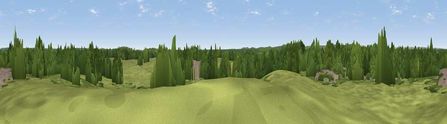

Viewpoint near Copythorne
#43882 in England · top 79% of its area beats it · near CopythorneWhere it is
The exact computed spot (SU 30977 14801). Click the marker for map links.
The view, rendered

A 360° render of this exact spot computed from the terrain model, tree cover and land cover — summer colours, afternoon light, calibrated against photographs of famous viewpoints. Real trees, hedges and buildings will differ in detail.
The panorama
Grey silhouette: terrain skyline in each direction (720 bearings, Earth curvature and refraction included). Dashed green: skyline with trees (+15 m) and buildings (+8 m) as obstacles. Blue strip: how far the ground is visible on each bearing.
Where the view opens
Wedge length = distance to the farthest visible ground on that bearing (vegetation-aware). Rings at 10, 25 and 50 km.
What fills the view
55% woodland · 39% grassland · 4% built-up · 2% cropland
Angular shares of the visible panorama (visual magnitude), not map area. Landscape diversity 0.39 (0–1 Shannon).
Key numbers
More beautiful places nearby
The staircase of upgrades: each row has a higher view potential than everything closer. Driving times are estimates from straight-line distance, calibrated against real road routing — check an actual route before setting out.
| Place | Direction | Drive | Score |
|---|---|---|---|
| Viewpoint near Calmore | E · 2 km | ~5 min | 26.3 |
| Stagbury Mount | WNW · 3 km | ~7 min | 29.3 |
| Viewpoint near Minstead | SW · 4 km | ~9 min | 29.8 |
| Viewpoint near Bramshaw | WNW · 5 km | ~11 min | 35.1 |
| Viewpoint near Fritham | WSW · 10 km | ~20 min | 38.7 |
| East Dean Hill | NNW · 12 km | ~22 min | 46.2 |
| Viewpoint near West Dean | NNW · 12 km | ~22 min | 52.7 |
| Viewpoint near West Grimstead | NW · 14 km | ~26 min | 54.6 |
50.93183, -1.56057 · source: osm peak · position refined by local search. Computed location — check access rights before visiting.